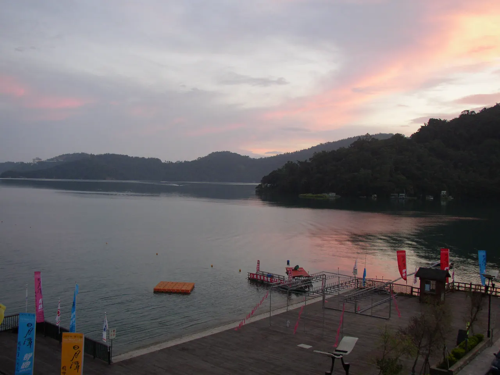

Nature

An island of mountain trails, night markets and warm welcomes.
Taiwan sits off the southeastern coast of China and combines compact cities, forested mountains and a long Pacific coastline. It is easy to pair a modern metro stop with a scenic railway or hiking trail.

Video description: A silent, 40-second timelapse of Taipei. The view shows urban development and changing land use around Taipei, Taiwan.
“It is the policy of the United States to preserve and promote extensive, people-to-people relations between the inhabitants of the United States and the people on Taiwan.”